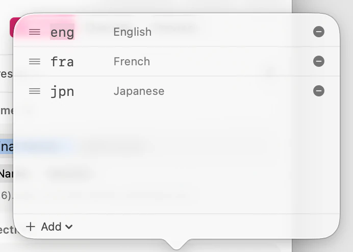

The keep rules are the heart of SubTrack. They apply to every file in the queue at once, so you describe what you want kept one time rather than per file.
To reach them, show the inspector (⌥⌘I) and choose Rules. The same rules appear when you edit a preset in Settings ▸ Presets.

Audio and subtitle tracks in these languages are kept. Everything in any other language is dropped.
The order matters, and it does something specific. The list is a preference ranking, and the first language in it becomes the default audio track of the slimmed file — the one that plays when you press play without choosing anything. If you keep English and Japanese but want Japanese audio to come up first, put Japanese first.
Languages are matched on the tag stored in the file, which uses three-letter ISO 639-2 codes. A file whose maker tagged a track wrongly will be treated according to the tag, not according to what you hear.
Keep untagged tracks governs tracks that carry no language tag at all.
This one setting decides whether some files come out perfect or come out silent. Studio discs tag everything, so for Blu-ray rips you can safely leave it off and drop the clutter. But web and streaming rips very often carry a single, correctly-encoded audio track with no tag on it — and if you drop untagged tracks, that file loses all of its sound.
If you work with rips from mixed sources, leave it on. You’ll keep the occasional track you didn’t need; the alternative is a silent film.
Include commentary / extra audio governs the non-default audio in a language you’re keeping: director commentary, descriptive audio, and alternate downmixes.
Turn it off and you keep one main audio track per language you asked for. Turn it on and you keep the extras too. Commentary tracks are usually small next to a main lossless mix, so this rarely costs much size — it’s a question of whether you want them.
Rules describe an intention; the inspector shows the consequence. Select any file and choose Preview in the inspector to see the whole file at once — every track your rules keep, in the order the output will carry them, and every track they drop. If a rule isn’t doing what you expected, that’s where you’ll see it.